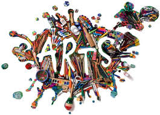

ความหมายและคำนิยามของศิลปะ

ความหมายของศิลปะ ศิลปะ เป็นคำที่มีความหมายทั้งกว้างและจำเพาะเจาะจง ทั้งนี้ย่อมแล้วแต่ ทัศนะของนัก ปราชญ์แต่ละคน รวมทั้งความเชื่อแนวคิด ในแต่ละยุค แต่ละสมัย มีความแตกต่างกัน หรือแล้วแต่ว่า จะนำศิลปะไปใช้ ในแวดวงที่กว้างขวาง หรือจำกัดอย่างไร แต่จากทัศนะของนักปราชญ์ ทั้งหลายจะ เห็นว่าศิลปะมีคุณลักษณะ ที่เป็นตัวร่วม สำคัญที่สุด ประการหนึ่ง คือ การแสดงออก ไม่ว่าจะเป็น อารมณ์ ความรู้สึก ความคิด ประสบการณ์ ความงามการเห็นแจ้ง สัญลักษณ์ ความเป็นเรื่องราวหรือ เหตุการณ์ ก็ล้วนแต่เป็น การแสดงออกโดยมนุษย์เป็นผู้เลือกสรร หรือสร้างสรรค์ ขึ้นทั้งสิ้น ดังนั้น จึงพอจะให้ความหมายของศิลปะในแนวกว้าง ๆ ได้ดังนี้ ศิลปะ คือ สิ่งที่มนุษย์สร้างขึ้นเพื่อแสดงออกซึ่งอารมณ์ ความรู้สึก ปัญญา ความคิดและหรือ ความงามทั้งนี้จะกล่าว โดยรวม ก็คือ ศิลปะ จะประกอบไปด้วย ส่วนประกอบ 3 ประการ คือ 1. มีความงาม 2. มีจุดมุ่งหมายที่แน่นอน 3. มีความคิดสร้างสรรค์ เหตุที่จำกัดวงอยู่เฉพาะผลิตผลของมนุษย์ อาจเป็นเพราะว่า ในบรรดา สัตว์โลกด้วยกัน มนุษย์เป็นสัตว์ประเภทเดียวที่สามารถ สร้างสื่อ ในการ ทำความเข้าใจร่วมกัน ดีที่สุด และการดำเนิน ชีวิตก็มีการพัฒนา ไปเป็นระบบ สิ่งเหล่านี้ นับเป็นสาเหตุหนึ่งที่มนุษย์ ยกย่องความเป็นสัตว์โลกของตน ว่าเป็นประเภทที่เหนือกว่า สัตว์โลกประเภทใด ดังนั้น รูปร่างลักษณะหรือ ผลงาน สร้างสรรค์ จากสิ่งต่าง ๆ ที่มิใช่ผลงานของมนุษย์ รวมทั้งปรากฏการณ์ธรรมชาติ ที่มี ความ สลับซับซ้อน มีความสวยงาม มีรูปทรงแปลกตา แม้ มนุษย์ จะมีความชื่นชม แต่ก็ไม่ ยอมรับว่าเป็นผลงานศิลปะ แต่หากมนุษย์ ใช้ความบันดาลใจ จากสิ่งเหล่านั้น มาสร้างสรรค์ขึ้นมาใหม่ ถือว่าเป็นศิลปะ แต่จะเป็น ศิลปะบริสุทธิ์ (Fine Art) หรือศิลปประยุกต์ (Applied Art) หรือไม่นั้น ก็ขึ้นอยู่กับจุดมุ่งหมาย ในการสร้าง คำนิยามของศิลปะ พจนานุกรมฉบับราชบัณฑิตยสถาน พุทธศักราช 2525 ให้นิยามของศิลปะว่า ศิลปะ คือ ฝีมือ ฝีมือทางการช่าง การแสดงซึ่งอารมณ์ สะเทือนใจ ให้ประจักษ์เห็น พจนานุกรมศัพท์ศิลปะ ฉบับราชบัณฑิตยสถาน พุทธศักราช 2530 นิยามความหมายของศิลปะว่า ศิลปะ คือ ผลแห่งพลังความคิดสร้างสรรค์ของมนุษย์ ที่แสดงออก ในรูปลักษณ์ ต่างๆให้ปรากฏซึ่งสุนทรียภาพความประทับใจ หรือ ความสะเทือนอารมณ์ ตามอัจฉริยภาพ พุทธิปัญญา ประสบการณ์ รสนิยม และทักษะของแต่ละคน เพื่อความพอใจ ความรื่นรมย์ ขนบธรรมเนียม จารีต ประเพณี หรือความเชื่อในลัทธิศาสนา และกล่าวว่า ศิลปะแบ่งออกเป็น 2 ประเภทใหญ่ ๆ คือ วิจิตรศิลป์ (Fine Art) กับประยุกต์ศิลป์ (Applied Art) อริสโตเติล (Aristotle) ปราชญ์ในยุคกรีกโบราณ นิยามความหมาย ของศิลปะว่า ศิลปะคือการเลียนแบบธรรมชาติ ตอลสตอย (Leo Tolstoi) นักประพันธ์ที่มีชื่อเสียงชาวรัสเซีย นิยาม ความหมาย ของศิลปะ ว่า ศิลปะคือการถ่ายทอดความรู้สึกของมนุษย์ออกมา ศาสตราจารย์ศิลป์ พีรศรี (C. Feroci) ศิลปินชาวอิตาเลียนผู้มาวางรากฐาน การศึกษาศิลปะสมัยใหม่ในประเทศไทย ได้นิยามความหมายของศิลปะว่า ศิลปะคืองาน อันเป็น ความพากเพียรของมนุษย์ ซึ่งจะต้องใช้ความพยายาม ด้วยมือและความคิด และยังมีคำนิยามของศิลปะที่น่าสนใจและถูกใช้อ้างอิง อย่างแพร่หลาย ในปัจจุบัน ที่ปรากฎตามหนังสือ และเอกสารต่าง ๆ ดังจะยกตัวอย่าง พอเป็นสังเขป ดังนี้ ศิลปะ คือ การเลียนแบบธรรมชาติ (Art is the imitation of nature) การตีความจากคำนิยามนี้ ธรรมชาติ ถือเป็นปัจจัยสำคัญที่ก่อให้เกิด แรงบันดาลใจ ให้แก่ ศิลปินในการสร้างงาน คำนิยามนี้ว่าศิลปะคือ การเลียนแบบธรรมชาติ เป็น คำนิยาม ที่ถือกันว่าเก่าแก่ที่สุดซึ่ง อริสโตเติล (Aristotle 384-322 B.C.) นักปราชญ์ชาวกรีก เป็นผู้ตั้งขึ้น เป็นการชี้ให้เห็นว่า ธรรมชาติอาจเปรียบได้ดังแม่บทสำคัญ ที่มีต่อศิลปะ ด้วยศิลปะ เป็นสิ่งสร้างโดยมนุษย์ และมนุษย์ก็ ถือกำเนิดมาท่ามกลาง ธรรมชาติ อีกทั้งบนเส้นทาง การดำเนินชีวิตมนุษย์ก็ผูกพันธ์อยู่กับธรรมชาติ จนไม่สามารถ แยกออกจากกันไดในทางศิลปะ มิใช่เป็นการบันทึก เลียนแบบเหมือนกระจกเงาหรือ ภาพถ่าย ซึ่งบันทึกสะท้อนทุกส่วน ที่อยู่ตรงหน้า แต่อาจจะเพิ่มเติม ตัดทอน หรืออาจจะใส่อารมณ์ ความรู้สึกเข้าไปด้วย ธรรมชาติเป็นแหล่งบันดาลใจที่สำคัญในการสร้างงานศิลปะของมนุษย์ ธรรมชาติ จึงอาจคล้ายแหล่งวิทยาการที่ยิ่งใหญ่ ของมวลมนุษย์ ในการศึกษา ค้นคว้าลอก เลียนและที่สำคัญคือ มนุษย์ต้องเรียนรู้ธรรมชาติ เพื่อการดำรงชีวิตอย่าง มีประสิทธิภาพ และจากการ สังเกต มนุษย์อาจได้พบกับความพึงพอใจในลักษณะ ที่แฝงเร้นอยู่กับธรรมชาติ ไม่ว่าจะเป็นสีสัน รูปร่าง บรรยากาศ ความแปลก ความงาม ฯลฯ และบางครั้งสังเกตเห็น ความเปลี่ยนแปลง ของธรรมชาติ ก่อให้เกิดความประทับใจ สะเทือนใจ เสียดายและความรู้สึกอื่น ๆ จนถึงความต้องการเป็น เจ้าของ จากความรู้สึกที่เกิดขึ้นนี้ เป็นแรงกระตุ้น ให้มนุษย์พยายาม ที่จะรักษาสภาพการณ์ นั้นไว้ให้คงอยู่ อาจด้วยความทรงจำ และถ่ายทอดความทรงจำนั้นด้วย สื่อและรูปแบบ ต่าง ๆ ในคำนิยามนี้ ศิลปะก็เปรียบได้ดัง เครื่องมือ ของศิลปิน ที่ใช้บันทึก เลียนแบบธรรมชาติไว้ แต่ในการเลียนแบบธรรมชาติ ในทางศิลปะ มิใช่การเลียนแบบเหมือนกระจกเงา หรือภาพถ่าย แต่อาจเพิ่มเติม ตัดทอน หรืออาจสอดแทรกอารมณ์ ของศิลปิน เข้าไปด้วย ศิลปะ คือ การถ่ายทอดความรู้สึกหรือแสดง ความรู้สึก เป็นรูปทรง (Art is the transformation of Feeling into form) รูปทรง ในที่นี้ คือว่าเป็นรูปธรรมที่สามารถสัมผัสได้ และตีความหมายได้ ซึ่ง หมายถึง ผลงานศิลปะที่เริ่มมาจาก ความคิดที่เป็นลักษณะ นามธรรมภายในตัวศิลปินเอง ที่คนทั่วไปไม่สามารถสัมผัสได้โดยตรง นอกจากเจ้าของ ความรู้สึกนั้น จะถ่ายทอดหรือสะท้อนออกมาเป็นรูปทรง ที่สัมผัส ได้ ตามความหมายของนิยามนี้ ศิลปะอาจเปรียบ เสมือน สื่อหรือเครื่องมือ ที่ผู้ถ่ายทอดใช้เป็น ตัวกลาง เพื่อโยง ความรู้สึกของตน แสดงให้ผู้อื่นได้รับรู้ หรือเข้าใจ ในสิ่งที่ ต้องการแสดง หรืออาจกล่าวได้ว่า เป็นการแปลลักษณะ นามธรรมมาเป็น รูปธรรมนั่นเอง แต่รูปธรรมที่แสดงออกนี้ อาจจะมี ลักษณะเป็นรูปทรงที่ระบุเป็นตัวตน ได้ว่าเป็นรูปอะไร ที่เรียกว่า ศิลปะกึ่งนามธรรมหรือระบุเป็นตัวตน ไม่ได้ที่เรียกว่า ศิลปะนามธรรม ส่วนความรู้สึกที่เกิดขึ้นนั้น ก็เนื่องมาจากสิ่งเร้า 2 ประการ คือ สิ่งเร้าภายนอก และสิ่งเร้าภายใน จากสิ่งเร้าทางใดทางหนึ่งนี้ มีอิทธิพลต่อการถ่ายทอด รูปแบบเป็นอันมาก คือ ถ้าเป็นความ รู้สึกที่เกิดขึ้น จากสิ่งเร้าภายนอก การถ่ายทอด มักจะเป็นรูปแบบ ในลักษณะเรื่องราว รายละเอียดของ สิ่งเร้านั้น เช่น การดู การแสดงในเรื่องใดเรื่องหนึ่ง แล้วเกิดความรู้สึก สนุกสนาน กับบทบาทของตัวแสดงที่เห็นได้จากภายนอก ซึ่งถือเป็น สิ่งเร้าภายนอก เมื่อถ่ายทอดโดยการเล่า ให้ผู้อื่นฟัง มักจะเล่าเรื่องราว รายละเอียด ของผู้แสดง และบทบาท การแสดงนั้น แต่ถ้าเป็น ความรู้สึกที่เกิดขึ้น จากสิ่งเร้าภายใน ของการแสดงนั้น ก็คือการเข้าใจ ซาบซึ้งในเนื้อหาสื่อเป็น ความรู้สึกออกมา เช่นโศกเศร้า ดีใจ สนุกสนาน เป็นต้น ศิลปะ คือ สื่อภาษาชนิดหนึ่ง (Art is The Language) สื่อ เป็นตัวกลางที่สามารถชักนำเชื่อมโยงให้ถึงกัน หรือสามารถทำการ ติดต่อกันได้ ภาษา หมายถึง เสียงหรือสื่อที่สามารถเข้าใจซึ่งกันและกันได้ สรุป รวม แล้ว ทั้งสื่อและภาษาเป็นพฤติกรรม ที่แสดงออก เพื่อชักนำ เพื่อติดต่อให้ถึงกัน และเมื่อ ตีความหมายของคำนิยามที่ว่า ศิลปะ เป็นสิ่งหรือภาษาได้อย่างไร โดยนำศิลปะไปเปรียบเทียบกับสื่อที่เป็นภาษาพูด และภาษาเขียน ใน ภาษาพูด เป็นลักษณะถ่ายทอดโดยใช้สื่อประเภทเสียง เปล่งออกมาเป็นคำ หรือประโยค เพื่อสื่อความหมายในสิ่งที่ผู้พูดต้อง การถ่ายทอดให้ผู้ฟังได้รับรู้ ส่วนภาษาเขียนเป็นลักษณะการ สื่อความหมาย โดยอาศัยสระ พยัญชนะ วรรณยุกต์ ฯลฯ เพื่อโยง ให้เกิดความเข้าใจร่วมกันระหว่างผู้เขียนกับผู้อ่าน การสื่อความหมายโดยใช้ภาษาเขียน และ ภาษาภาพ เป็นลักษณะ การถ่ายทอดสิ่งที่ต้องการ ให้ผู้อื่นรับรู้ ให้ปรากฎในรูป แบบศิลปะอันอาจเป็นลักษณะ เส้น รูปร่าง รูปทรง ทิศทาง แสงเงา สี และอื่น ๆ ทั้งในลักษณะที่เป็น รูปธรรมและนามธรรม ตัวอย่างเช่นในภาษาพูดสื่อความหมาย โดยกล่าวคำว่า ผีเสื้อ ผู้ฟัง ย่อมสามารถ รู้ความหมาย ด้วยการระลึกถึงลักษณะรูปร่าง สีสัน รายละเอียดของผีเสื้อ จากประสบการณ์เดิม ส่วนในภาษาเขียนก็ เช่นเดียวกันเขียนคำว่า ผีเสื้อ ผู้อ่านก็ต้องระลึกถึง ประสบการณ์เดิม มาประกอบในการ แปลความ เหมือนกัน และในทางศิลปะ อาจถ่ายทอด โดยการ วาดภาพผีเสื้อขึ้น ผู้ดูสามารถรับรู้และตีความ ได้ทันที โดยมิต้องใช้ความคิดจินตนาการในรูปแบบมาประกอบการตีความ ย่อมแสดง ได้ว่า ศิลปะสามารถจัดเข้าลักษณะสื่อ หรือภาษา ได้เช่นเดียวกัน และสื่อภาษา ที่ชัดเจน กว่าสื่อตัวอักษร หรือคำพูด ดังคำกล่าว ของนักปรัชญาจีนที่เคยกล่าวว่า รูปภาพ 1 รูปสามารถใช้แทนคำพูด ได้นับพันคำ การที่จะเข้าใจการสื่อความหมาย ไม่ว่าจะสื่อภาษา ชนิดใดก็ตาม ทั้งภาษาพูด ภาษาเขียน หรือภาษาภาพ ผู้ที่สามารถตีความหมาย หรือทำความเข้าใจได้ย่อม ต้องอาศัย การศึกษาเรียนรู้ในหลักการ ของภาษานั้น รวมทั้งการ ฝึกฝน หาประสบการณ์เกี่ยวกับสื่อภาษา ชนิดนั้น ๆ มาเป็นพื้นฐาน ไว้โยงตีความหมาย ยิ่งมีพื้นฐานประสบการณ์มากเท่าไร ก็ยิ่งสามารถเข้าใจในสื่อภาษานั้นเป็น อย่างดี ศิลปะ คือ การแสดงบุคลิคลักษณะของศิลปิน (Art is the The Expression of Great Personallity) บุคลิกภาพเป็นลักษณะคงที่ของบุคคล หรือแนวโน้มที่แสดงให้เห็นถึง ลักษณะที่ เหมือน หรือแตกต่างกันของพฤติกรรมทางจิตวิทยา เช่น ความนึกคิด ความรู้สึก และการกระทำในช่วงเวลาหนึ่ง และบุคลิกภาพ เป็นแบบแผนที่เป็นเอกลักษณ์ (Unique) ที่ประกอบกันขึ้นของบุคคล เป็น เอกลักษณ์ประจำตัวของมนุษย์ทุกคน และไม่มีใคร เหมือนใครได้เลย เป็นความแตกต่างระหว่างบุคคลจากคำจำกัดความของนักจิตวิทยา ที่ให้ ความหมายเกี่ยวกับบุคลิกภาพนั้น พอที่จะสรุป กล่าวได้ว่า บุคลิกภาพ เป็นลักษณะเฉพาะหรือเอกลักษณ์ของแต่ละบุคคล ดังนั้น พฤติกรรมที่ ปรากฏในแต่ละบุคคลย่อมไม่เหมือนกัน ศิลปะอาจนับได้ว่า เป็นเครื่องมือ หรือสื่อ ที่ใช้ถ่ายทอดและ บันทึกพฤติกรรมของศิลปิน ดังนั้น ผลงานศิลปะ ก็คือ เครื่องบันทึก พฤติกรรมอันเป็นบุคลิกภาพ เฉพาะของศิลปินนั่นเอง